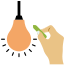

Projek Alat Penyelamat Banjir
Projek Alat Penyelamat banjir telah melibatkan 25 murid prasekolah yang berumur enam tahun. Akibat daripada banjir kilat yang melanda kawasan perumahan pada Disember 2021, kebanyakan keluarga murid prasekolah tersebut telah menghadapi cabaran dan kesulitan.
Sehubungan itu, guru mengambil keputusan untuk membimbing murid melaksanakan satu projek berkaitan banjir. Selepas perbincangan bersama-sama guru, murid telah memilih untuk menghasilkan alat penyelamat semasa banjir. Projek ini telah dilaksanakan dalam tiga fasa secara bersemuka dan secara dalam talian selama 10 minggu.
Kerangka Pelaksanaan PBP
Projek Bermula
Langkah 1/10

Perbincangan Idea Projek
- Fikirkan soalan utama (Driving Question).
- Menyediakan stimulus dan persekitaran yang sesuai.
- Membina Web Jangkaan Guru.
- Pentaksiran.
Langkah 2/10
Penetapan Tajuk dan Objektif Pembelajaran
- Membina Web Aktiviti Projek bersama-sama murid.
- Menyediakan langkah-langkah pelaksanaan aktiviti.
- Pentaksiran.
Langkah 3/10
Penentuan Kumpulan Sasaran
- Menentukan kumpulan berdasarkan produk yang ingin dihasilkan oleh murid (bot keselamatan, baju penyelamat dan pelampung).
- Menyediakan senarai semak.
Langkah 4/10
Perancangan Aktiviti dan Garis Masa
Menentukan tempoh masa untuk setiap fasa berdasarkan aktiviti yang dirancang (anggaran masa sahaja).
Langkah 5/10
Penerokaan dan Penyiasatan
- Merancang aktiviti eksperimen dan bahan eksperimen.
- Berkomunikasi dengan ibu bapa tentang penyediaan bahan eksperimen yang senang diperoleh di rumah.
- Merancang pentaksiran.
Langkah 6/10

Penyelesaian Masalah dan Membuat Keputusan
- Merancang dan menyediakan bahan pembinaan projek yang diperlukan (guru dan ibu bapa)
- Menyediakan kolam air besar
- Menyediakan alatan rakaman
- Merancang pentaksiran:

Langkah 7/10
Input Baharu dan Penghasilan Produk Akhir
- Merancang kunjungan pakar
- Merancang pameran
- Merancang pembentangan murid
- Penghasilan video demostrasi pembinaan APB.
- Merancang pentaksiran.
Langkah 8/10
Pembentangan / Showcase
- Merancang “De Ending Ceremony-Rescue Kit” secara dalam talian.
- Merancang dan menghasilkan video pelaksanaan projek oleh guru (Fasa 1-3).
Langkah 9/10
Penilaian dan Maklum Balas
- Merancang dan menghasilkan video pelaksanaan projek (Fasa1-3).
- Merancang pentaksiran.
Langkah 10/10
Penilaian Kendiri dan Refleksi
- Refleksi guru (kekuatan, kekangan dan penambahbaikan)
- Refleksi murid (pengalaman kekuatan dan kekurangan sendiri)
Pembelajaran Bermakna Tercapai!
Lampiran
Contoh PdP
Prasekolah
Refleksi Pengkaji@Guru
Prasekolah